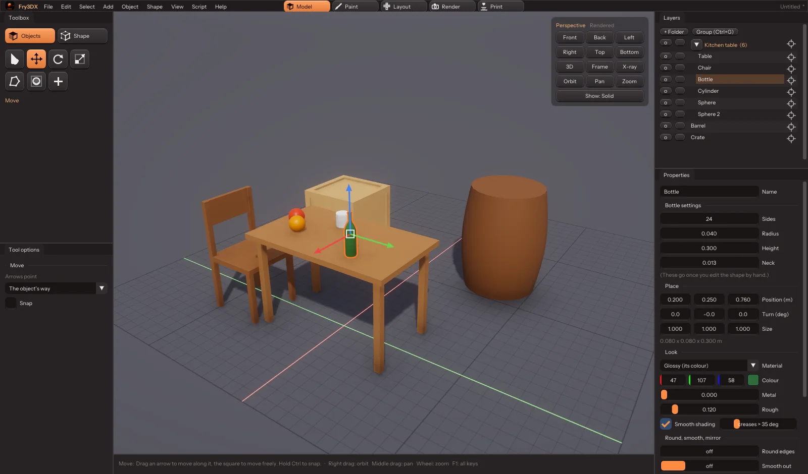

What it does
The useful parts of the big modellers, without the hundred menus.
How it looks
Five tabs: what you're doing, not where it's hidden.
Scripting
Files
Keys that make sense
Get it
Free, open source, for the computer you've got.
Terminal
Versions